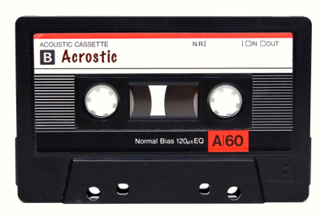

Introducing one's self is not as easy at it sounds. As Alain De Botton brilliantly explained, “What do you do?” is an innocuous question with high stakes. When I was 16, I wanted to be a writer. When I was 20, I wanted to be a musician. In the end, I’ve become a programmer, and I’m incredibly happy with this. Years on, programming keeps on giving me joy – and absolutely no status anxiety.
Why Basecamp, and why me?
There are many reasons why I would love to join your team, and the main one is Basecamp itself. I don’t want to sound too fanboyish, but Basecamp has been one of my main influences for the last 15 years or so. Back in 2005, 37signals was, to me, the home of the two smartest pieces of technology I had ever seen: Prototype and Rails. They set the young self-taught, LAMP-and-HTML developer that I was on an enlightening path. I owe a lot to DHH and Sam Stephenson (as well as Douglas Crockford, Dave Thomas and Andy Hunt) for what I’ve learned about good code and intelligent design – no, not the one mentionned here.
As my career progressed, I naturally got interested in the human side of crafting software: how to decide on the job to be done, how to lead projects, how to make people work together and communicate with one another. Getting real and Rework have had a significant impact on me, in part because of the ideas and advice they contain, in part because, reading them, I felt validated in my own beliefs about how people should work: in a sane and efficient manner. Naturally, when my managing duties grew (as the CTO of a B2B-focused company for the last 7 years, I’ve been leading a team that’s now 10 people strong), I turned to Basecamp for advice – be it through Signal vs Noise, The Watercooler, or Know Your Company/Know Your Team. And our playbook draws heavily on Basecamp’s.
TL;DR: I love what the programmers at Basecamp do, and I love even more the way Basecamp itself works.
What I love
I love writing code. I love writing code for the low-level, clever scientific puzzles to be solved, but even more for the high-level, human-facing ideas to be expressed and shared almost as literature. I love writing code in collaboration with other programmers, the way great songs are written by talented musicians riffing off each other, or by a fellow producer arranging someone’s else good material into something awesome.
I love Ruby. I love Ruby for itself, as a language, but even more for its community. Sharing, caring, benevolent, yet also highly technical, demanding, and still fun and excentric. I don’t care if Rubyists should be 10x developers, but I known that those I have met were 10x human beings.
I love sharing my love for programming and for Ruby. This is is why I enjoy attending and giving talks at various meetups, why I’ve set up Rails Girls week-ends, and dabbled in podcasting.
I love my team and my current co-workers. They are great people whom I feel close to. I have been lucky enough to be trusted to a key position, and in return, I have helped the company grow from four people in a single room to what it is today. However, I did not hesitate when I read about this opening. I really believe that this job is the right one for me, and that I am the right person to do it.
Things I always say
I also love speaking in quotes. Here are some of my favorites.
Ce qui vaut la peine d’être fait mérite d’être bien fait.
(Anything worth doing, is worth doing right)
Ce qui ce conçoit bien s’énonce clairement, et les mots pour le dire viennent aisément
(Whatever is well conceived is clearly said, and the words to say it flow with ease)
Reasons not to hire me
There are obviously no good reasons not to hire me, but should you decide to welcome someone else (lucky them!), here are a few excuses that you could use to spare my feelings:
- I really don't care much about cars – so much for the culture it. I ride a rather cool bike, though.
- I’m not a great open source contributor. I contribute whenever I can; however, most of my work has been on proprietary software. However, I did give back to Rails once (obviously the highlight of my career).
- I keep dressing like I’m 17 and it’s 1993, even though back then I was dressing like it was 1989.
- I snore. A lot. It drives my girlfriend mad.
<3
Thank you for taking the time to read this and for basically giving me the opportunity to write about things that I love (and about me, which is always a pleasant, if narcissistic, excercice). I hope it’s been an entertaining read, and I really hope that it made you want to get to know me a bit more.
Anyway, since this application is basically a love letter, and because I’m a bit of a Rob Fleming, here is a playlist (aka a mixtape of our age) to thank you for your time. I hope you’ll like it!
